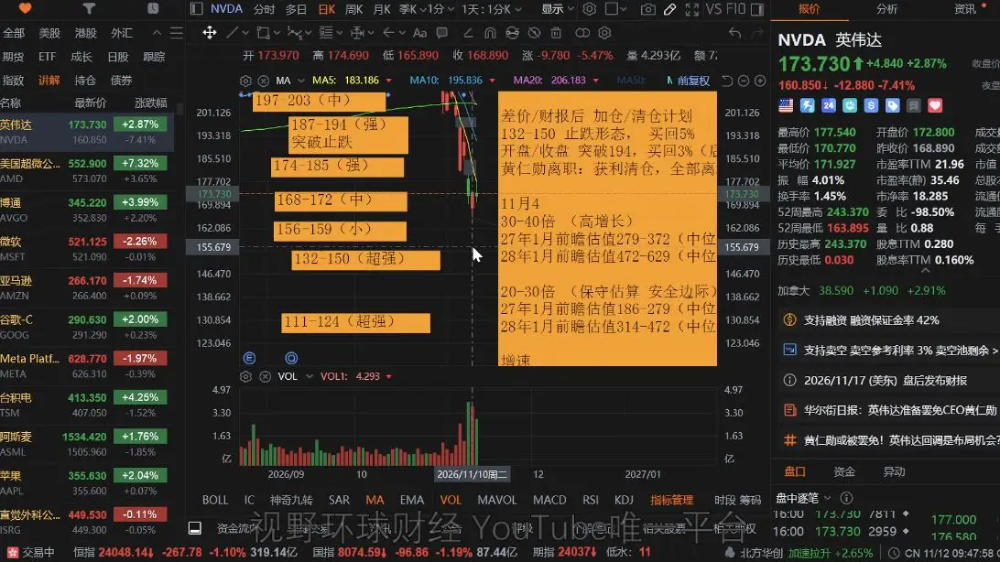
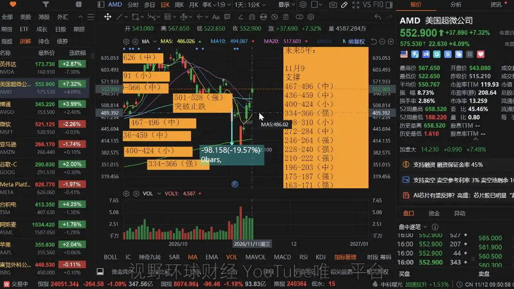
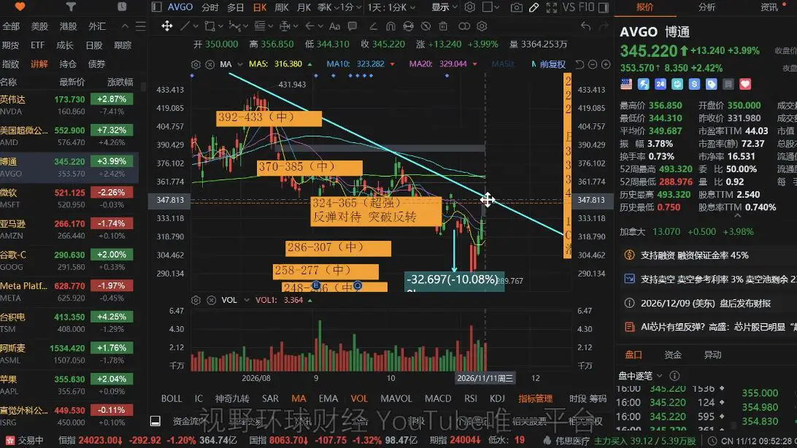
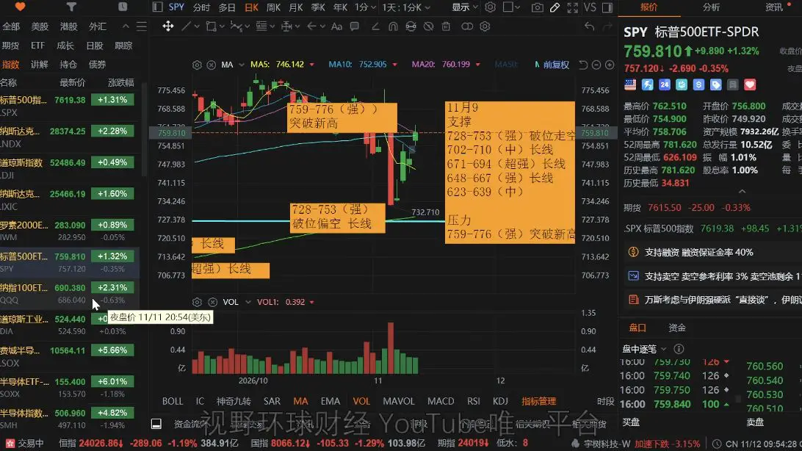
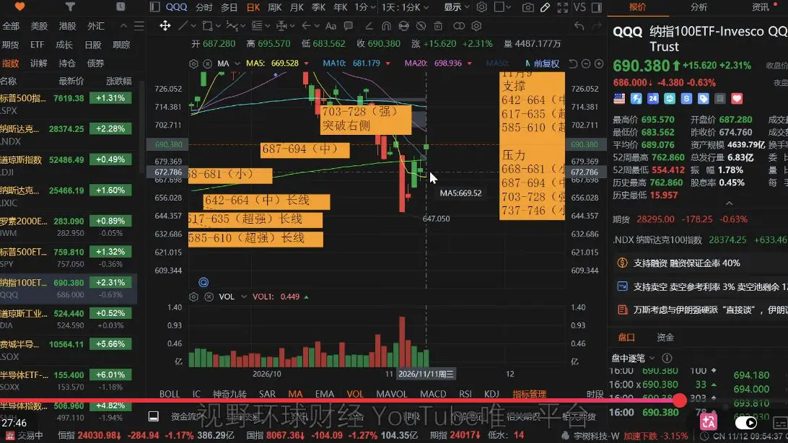
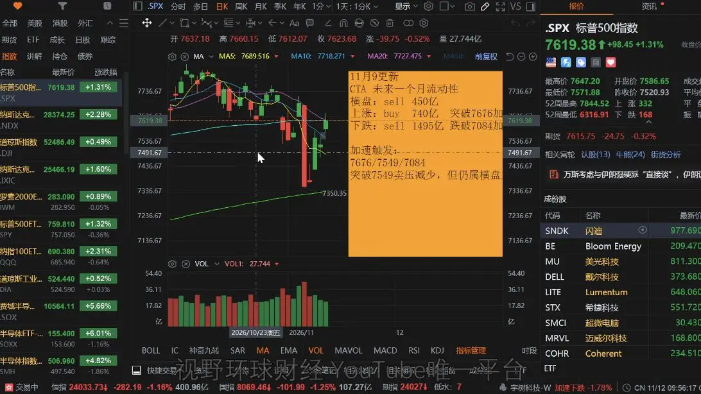
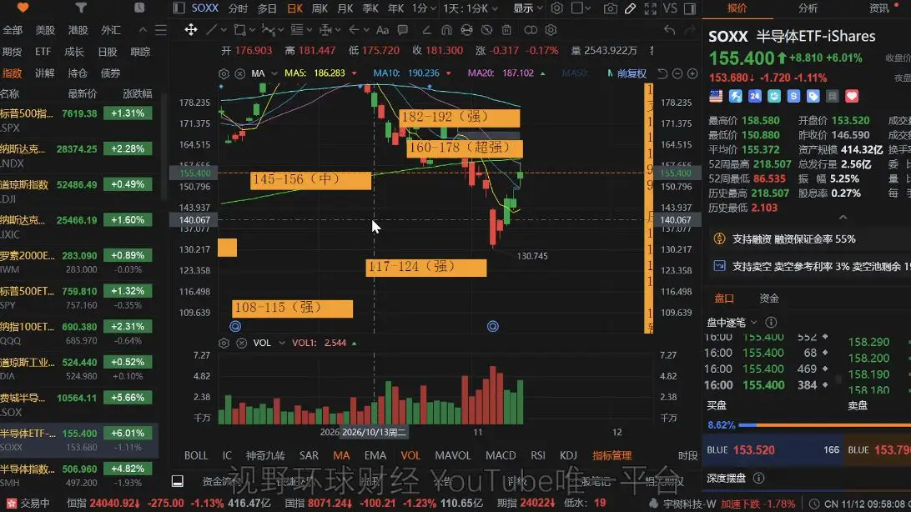
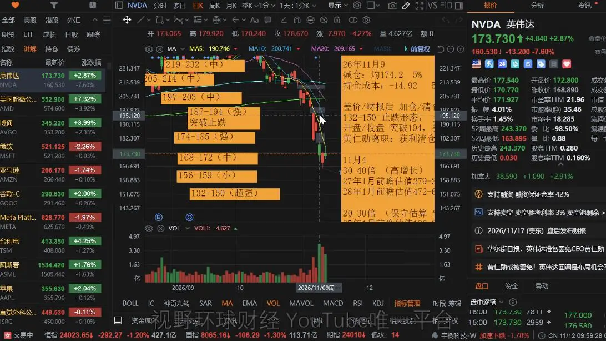

美股 NVDA风暴继续，利好谁？持仓计划更新！大盘反弹最简单部分走完！本期重点8 组 · 9 条指数反弹与英伟达分化1关键人风险与路线图1NVDA 先等财报1AMD 的突破与回踩1AVGO 的趋势确认1SPY、标普及半导体指数1QQQ 与 CTA 的确认条件2财报后重新评估路径1指数反弹与英伟达分化四大股指反弹，纳斯达克 100 上涨约 2%，费城半导体指数 30 只成分股全部上涨。1 条指数反弹与英伟达分化四大股指反弹，纳斯达克 100 上涨约 2%，费城半导体指数 30 只成分股全部上涨。▶回听00:00—02:00对应正文 ↗关键人风险与路线图一旦确认黄仁勋被罢免，我会清仓。1 条关键人风险与路线图一旦确认黄仁勋被罢免，我会清仓。▶回听02:00—13:43对应正文 ↗NVDA 先等财报接近 150 美元有明显技术支撑。1 条NVDA 先等财报接近 150 美元有明显技术支撑。▶回听13:43—16:25对应正文 ↗AMD 的突破与回踩AMD 此前跌破 501 美元后又下挫近两成，这次开盘约 543 美元，已越过 528 美元。1 条AMD 的突破与回踩AMD 此前跌破 501 美元后又下挫近两成，这次开盘约 543 美元，已越过 528 美元。▶回听16:25—18:40对应正文 ↗AVGO 的趋势确认博通此前跌破 324 美元后进一步下挫约 10%，当前反弹可跟踪趋势线变化，但当时尚未越过 365 美元，突破的确认条件仍在前方。1 条AVGO 的趋势确认博通此前跌破 324 美元后进一步下挫约 10%，当前反弹可跟踪趋势线变化，但当时尚未越过 365 美元，突破的确认条件仍在前方。▶回听18:40—20:00对应正文 ↗SPY、标普及半导体指数最容易的一段反弹已经走完。1 条SPY、标普及半导体指数最容易的一段反弹已经走完。▶回听20:00—21:20对应正文 ↗QQQ 与 CTA 的确认条件QQQ 当时约 690 美元，盘中高点约 695 美元，更上一档先看 703 美元。2 条QQQ 与 CTA 的确认条件QQQ 当时约 690 美元，盘中高点约 695 美元，更上一档先看 703 美元。▶回听21:20—24:40对应正文 ↗QQQ 与 CTA 的确认条件SOXX 仍处在 160–178 美元的关键区间附近，接近压力后的表现更值得看，直接把普涨外推成一路上涨容易高估资金合力。▶回听21:20—24:40对应正文 ↗财报后重新评估路径财报会把现有订单与短期增长进一步量化，2028 年后的路线图仍取决于继任和执行。1 条财报后重新评估路径财报会把现有订单与短期增长进一步量化，2028 年后的路线图仍取决于继任和执行。▶回听24:40—26:40对应正文 ↗这期涉及哪些股票与内容？NVDA主讲接近 150 美元有明显技术支撑。AMD主讲AMD 此前跌破 501 美元后又下挫近两成，这次开盘约 543 美元，已越过 528 美元。AVGO主讲博通此前跌破 324 美元后进一步下挫约 10%，当前反弹可跟踪趋势线变化，但当时尚未越过 365 美元，突破的确认条件仍在前方。SPY主讲最容易的一段反弹已经走完。QQQ主讲QQQ 当时约 690 美元，盘中高点约 695 美元，更上一档先看 703 美元。SOXX主讲QQQ 当时约 690 美元，盘中高点约 695 美元，更上一档先看 703 美元。背景提及：无。市场指标：SPX。背景提及不代表对该股票展开分析。CHAPTER 01 · 回听 00:00指数反弹与英伟达分化四大股指反弹，纳斯达克 100 上涨约 2%，费城半导体指数 30 只成分股全部上涨。标普 500 上涨和下跌的成分股分别是 332 只和 168 只，市场宽度较好。英伟达却一度跌至约 160 美元，个股治理风险和板块走势明显分化。CHAPTER 02 · 回听 02:00关键人风险与路线图一旦确认黄仁勋被罢免，我会清仓。判断依据涉及长期资本配置、重大技术押注、对外关系和企业文化。既有产品路线及订单对 2027、2028 年仍有支撑，继任团队能否维持 2028 年以后的产品节奏与生态协作，需要另行观察。CHAPTER 03 · 回听 13:43NVDA 先等财报接近 150 美元有明显技术支撑。我会等 17 日财报落地，再结合实际走势判断；估值和支撑给出观察范围，管理层变化仍可能改变持仓前提。放大查看 ↗NVDA 原图 · NVDA 先等财报原视频 15:00回听此处CHAPTER 04 · 回听 16:25AMD 的突破与回踩AMD 此前跌破 501 美元后又下挫近两成，这次开盘约 543 美元，已越过 528 美元。技术上有突破机会，仍需观察能否守住突破区以及这轮资金转移能否持续。放大查看 ↗AMD 原图 · AMD 的突破与回踩原视频 18:00回听此处CHAPTER 05 · 回听 18:40AVGO 的趋势确认博通此前跌破 324 美元后进一步下挫约 10%，当前反弹可跟踪趋势线变化，但当时尚未越过 365 美元，突破的确认条件仍在前方。放大查看 ↗AVGO 原图 · AVGO 的趋势确认原视频 19:29回听此处CHAPTER 06 · 回听 20:00SPY、标普及半导体指数最容易的一段反弹已经走完。SPY 回到约 759 美元，进入 759–776 美元强压力区，指数和半导体也要观察能否延续反弹，不能把接近压力区当成突破。放大查看 ↗SPY 原图 · SPY、标普及半导体指数原视频 21:29回听此处CHAPTER 07 · 回听 21:20QQQ 与 CTA 的确认条件QQQ 当时约 690 美元，盘中高点约 695 美元，更上一档先看 703 美元。标普收在约 7619 点，是否突破 7676 点会影响 CTA 是否加速参与。SOXX 仍处在 160–178 美元的关键区间附近，接近压力后的表现更值得看，直接把普涨外推成一路上涨容易高估资金合力。放大查看 ↗QQQ 原图 · QQQ 与 CTA 的确认条件原视频 21:39回听此处放大查看 ↗SPX 原图 · QQQ 与 CTA 的确认条件原视频 23:19回听此处放大查看 ↗SOXX 原图 · QQQ 与 CTA 的确认条件原视频 25:10回听此处CHAPTER 08 · 回听 24:40财报后重新评估路径财报会把现有订单与短期增长进一步量化，2028 年后的路线图仍取决于继任和执行。股价回到某个成本位只有交易上的意义，持有到 2027 年以后的决定仍要看财报与公司治理的最新信息。放大查看 ↗NVDA 原图 · 财报后重新评估路径原视频 26:30回听此处SOURCE MATERIAL完整转录与回听原视频：美股 NVDA风暴继续，利好谁？持仓计划更新！大盘反弹最简单部分走完！机器原稿可能含同音字与数字单位错误，保留用于对照。播放00:0027:461×1.25×1.5×2×静音展开完整转录下载 TXT ↗下载 SRT ↗查找转录内容00:00大家好,欢迎回到视野环球财经,我是Ryno。现在是美东时间,26年11月11号,周三晚上的8点25分。00:10今天的四大指数是大涨,纳指100,0涨了2%。半导机的表现也是非常出色,30只成分股全部上涨。00:19今天标普的广度也相当不错,332只成分股上涨,只有168只下跌。00:26整体来讲,今天的盘中是相对来讲风平浪静,整个高开之后,中间也没有回落太多。00:35不过今天这个盘后是风云突变。00:39咱们看到纳指的期货,在盘后的时候最多跌了差不多一个点。00:48最主要的原因是根据华尔街日报的报道,00:51英伟达的董事会最早可能于周四,就是马上不就周四了吗?00:58会召开会议,以决定黄仁勋的去留,很有可能会罢免黄仁勋。01:05那么根据目前我在录制节目的时候看到的消息进展是,01:10媒体传出的消息越来越多,比如说什么英伟达的董事会,01:15已经开始物色新的CEO等等等等。01:18但是呢,媒体的消息只是消息,在没有官方确认以前,01:23他都只是传言。01:26但不管怎么样呢,今天英伟达确实是在盘后又跌了七八个点,01:31目前已经跌到了160块。01:34好,那么今天的这个节目呢,我想围绕着英伟达来展开,01:40包括分析,假如黄仁勋真的离开,那么英伟达的未来会怎么样?01:48还有呢,就是哪些公司会有利好?01:51以及我的仓位的决定,怎么去做?01:55好,首先呢,跟大家确认一件事情。02:02就是我的仓位决定啊,一旦确定黄仁勋被罢免,02:07我是肯定会清仓英伟达的,不再持有啊。02:12我还是给大家谈一谈原因,因为很多朋友经常问这个原因哈,02:16给大家讲讲我个人的一个想法啊,02:18大家一定呢,只拿去做个参考啊,你自己呢,做一些决定。02:22因为等会呢,我会讲到关于他在后面的一些看法,02:27对于未来的一些线路图等等。02:33那咱们这样啊,咱们把这个黄仁勋和这个英伟达的大概的历史情况,02:39以及他在整个的英伟达中的地位啊,包括的重要性呢,02:44跟大家讲一讲啊,这样大家可能比较能够更好的去理解啊,02:49我为什么会做出这个清仓的决定。02:53首先呢,黄仁勋是三位联合创始人之一,02:57他是总裁兼CEO吧,03:00自1993年公司成立以来呢,是一直在担任这个职务,03:05是公司呢,从图形芯片起步,03:07到成为AI计算平台龙头的核心推动者。03:11他的影响力主要是来自于长期的战略领导,03:14产品和生态决策。03:18那么他的管理风格呢,03:19是他亲力亲为,03:21亲自深度参与所有的产品的战略运营,03:26和一些关键的节点。03:28长期呢,都是他直接领导核心团队啊,03:31由于他是公司历史上唯一的一个CEO,03:35所以呢,03:36其实英伟达从1993年创立至今,03:39所有的战略方向,03:41技术路线图和重大投资决策,03:44都是高度依赖他的个人的判断,03:48因为其他的两位联合创始人呢,03:51他们是和技术相关的,03:53那么后来是逐步的淡出了核心角色。03:56黄仁勋呢,03:57最后就成为了核心的长期领导者。04:00那么他的股份到底有多少呢?04:04实际上他的股份不多啊,04:07他的股份呢,04:08我们看到截止到2026年3月23号的数据,04:13他一共持有8.76亿股,04:16占到当时流通股普通股的差不多3.58%,04:20那么现在呢,04:22又过去了大概7个月,04:23可能会有一些微小的变化,04:25但差别不大。04:27他是最大的个人股东,04:30但是机构投资者持股更多,04:34他这个投票权呢,04:35没有什么特殊投票权,04:36就是一股一票,04:37所以他只有3.58%的投票权,04:41完全不足以单独控制股东大会,04:45或者阻止重大的决策,04:47所以他能够留在今天,04:50因为这个董事会权力是比较大的,04:52CEO可在有董事会,04:54这个现任董事过半的投票的情况下会罢免他,04:57那么为什么93年到现在以来,05:00没有出现这种情况呢?05:01其实就是因为在他的领导下,05:04英伟达的表现有目共睹嘛,05:06大家没有必要去换人,05:07对不对?05:08对于公司的贡献,05:09对于业绩的增长来讲,05:11对于重大角色和转型来讲,05:13都非常的重要,05:14他已经证明了,05:15他在公司领导层面判断力是非常不错的。05:19好,05:20那么为什么黄仁勋会很重要,05:23他远超普通CEO,05:25大家会经常想,05:26那那些大公司不是也经常去有CEO更换吗?05:30为什么没有这么大的影响呢?05:36他是重要节点的决策者,05:40如果没有黄仁勋,05:421990年代的中期公司,05:44那个时候可能根本就撑不过他早期,05:47早期的时候不是很困难吗?05:49对吧?05:49或者他很有可能只是一家普通的图形芯片公司,05:54即便公司存活了对吧?05:56他几乎是不可能在2000年代那么早的时期,06:01就坚定的去投入到CUDA这个生态的,06:04而且他持续10年等待回报,06:07你想想他提醒了10年做这个决策,06:10那么最终他现在我们看到的AI浪潮,06:13成为现在的万亿平台,06:15现在的AI计算的平台,06:17对吧?06:17这是有目共睹的一件事情,06:19这个一定是和他个人决策有很大关系的,06:23那很多朋友会说,06:24那现在有一些公司CEO换人不也一样吗?06:26很多的CEO,06:27他们是在任,06:29在任的CEO后面都有继任者,06:31你比如说苹果,06:32对吧?06:33比如像伯克夏尔哈萨维,06:35他们都是有继任者的,06:37在他这里没有,06:38相当于一个空档,06:39因为大家之前一直都认为他可以,06:42只要他自己愿意做身体健康,06:44没有退休计划,06:45他应该可以一直做下去,06:47他就不一样,06:48他是唯一的一个CEO嘛,06:50好,06:50还有呢就是他不仅是决策者,06:53他还是销售人员,06:56他是全球推销员的这么个角色,06:59他是频繁的会见各国元首和政府高层,07:03推动AI主权项目,07:05并配套投资当地的出唐公司,07:08同时又锁定了大规模的芯片采购,07:10那么这些国家级别的订单,07:12常规销售团队,07:14你很难单独拿下吧,07:16对吧,07:16一定是要有个人的色彩和个人魅力在里面,07:19和个人的关系在里面,07:20你才能拿得到的,07:21好,07:22所以大单销售也在靠他,07:25还有就是政府关系与出口管制游说,07:28他持续参与对美国政府的出口政策的游说,07:32直接影响公司在售限市场的收入规模,07:35这类事务通常也是依赖他个人的关系和这个说服力,07:39好,07:40那么这几个呢,07:41都是他在比方说决策,07:44还有管制,07:45包括销售层面,07:47他的一些重要作用,07:49另外还有一点,07:51我们不得不承认的是什么呢,07:53就是他的存在和公共叙事与市场信心有关系,08:01每次的GCC大会主题演讲都是他对吧,08:04他不仅是技术发布,08:06更是大规模的预售和需求的一个催化的这么一个关键角色,08:11很多的客户对他们的线路图,08:14对他的讲话很有信心,08:16其实也是因为他在这个位置上,08:19很大疼痛上来自于对他本人的持续承诺,08:23还有对于英伟达的线路图的可见性的预期,08:27所以他的重要性就在这里,08:30大家就会说了,08:31如果没有他,08:33英伟达就不行了吗,08:34换一个人就不可以了吗,08:36可以是可以,08:37但是有时间限制,08:41没有黄仁勋,08:43英伟达的未来会怎么样?08:46我认为呢,08:47两到三年之内,08:50技术路线,08:51包括护城河,08:52还是比较稳固的,08:54因为现在英伟达的产品的线路图已经是公开的,08:59它是锁定到2028年左右的,09:01就相当于该研发的产品都在做,09:03该出的货,09:04该下的订单,09:05干对接的销售厂商都已经对接了,09:08那么Blackwell再出货,09:09对吧,09:10Rubin也已经量产在部署,09:11那后面别说还有什么Ultro,09:13还有这个Failman等等啊,09:15这个都是已经在现在的公司计划里面,09:18有它没它都是确定的,09:22好,09:23第二个,09:24他之前建立的库大生态,09:26这是英伟达真正的护城河,09:29经过了20来年的积累,09:32这么多客户,09:33对吧,09:33这么多客户锁定,09:35这么多人在用,09:35你不能说把黄仁勋换掉了,09:38大家就不用了吧,09:39那不可能嘛,09:40那这些客户,09:41你可能还是需要用他的工具的呀,09:43对吧,09:43这个和他的CEO没有任何关系,09:45对吧,09:46好,09:48还有就是,09:49他的什么运营啊,09:50财务啊,09:51制造供应链,09:52是有成熟的团队的,09:54公司现在是一个超大规模的企业,09:56它不是早期的小公司,09:58它也不会因为更换CEO,10:00就立马的就散架,10:02这很显然也不可能发生,10:03对不对,10:05好,10:05那么还有什么呢,10:08稳定的部分就是,10:10公司其实呢,10:12在即便没有他,10:15仍旧会继续存在,10:16并且保持强大的竞争力,10:19最主要的就是他这个枯大生态,10:21加上他已经到2028年的泄露图,10:24完全可以支撑基本盘和他的业绩蓄势,10:28一直到2028年,10:30今年多什么年了,10:33今年现在是,10:34这个,10:36呃,10:362026年的10月份了,10:38对吧,10:38还有个2027年,10:40那么2027年面临什么呢,10:42面临着我们说嘛,10:42整个AI行业到底有没有什么变化嘛,10:45那么它现在可以持续到28年,10:48但是28年之后呢,10:50我们中间还要经过一个可能会有巨大变化的2027年,10:55那么更换CEO后,10:57公司呢,10:58可能就会变得更加常规化,11:00普通化,11:01对吧,11:01长期28年以后的线路图的调整,11:05包括竞争对手迎头赶上,11:07向MD,11:09向自研的这个博通,11:11怎么去应对他们,11:13你需要有新的决策来领导吧,11:16那么还有低温政治博弈,11:18对吧,11:18你的正常关系,11:19现在是出现了重大变化,11:21所以这些都会受到非常明显的影响,11:26这也是很显然的,11:27所以这个问题上你可以这么看待,11:30如果你还是看一个中期,11:32特别是你特别看好AI,11:35可以就有惊无险的度过2027年,11:38并且逐渐的成熟,11:392028年稳定壮大,11:42那么28年之后,11:43英伟达仍旧在这个头部玩家里边,11:46能够维持着比较好的一个状态,11:49你当然可以持有,11:51对吧,11:51你当然可以去拿,11:53当然前提是你相信这些,11:56可信度很重要嘛,11:58我们说,11:59好,12:00那么对我个人来讲,12:02是个什么样的一个考量呢,12:04对我个人来讲,12:08原来我对英伟达的评价是,12:11它现在是一个高增长期,12:14未来它即便说,12:16我们说增长放缓了,12:18那么对于它的市场需求来讲,12:20也是比较不错的,12:22对吧,12:22那它可以从高增长到一个低增长,12:25都可以持有,12:26无非是股价快和慢的问题,12:27但增长的路径是不一定的,12:30因为公司的竞争力很强,12:32整个的企业文化,12:34包括线路图,12:36包括领先市场的一些技术路线,12:38都是看得见的,12:40但这些东西,12:42现在我们都只能看到2028年,12:45那么这个就对我在更长期去持有它,12:49我现在认为,12:51更换了它之后,12:52英伟达高度可信的未来,12:55对我个人来讲不再可信,12:58因为CEO的个人判断力,13:00战略节奏,13:01重大赌注,13:02对外关系,13:03还有企业文化,13:04其实都和这个CEO有很大的关系,13:08那相当于来讲,13:09英伟达可能还是一家未来伟大的公司,13:12但是可能和现在这家伟大的公司,13:15它不是同一个公司了,13:18那么我以前要投资的那家长期的英伟达,13:21那就不再是我要投资的标的,13:24所以这个就是我的一个个人判断,13:28归根到底一句话,13:30君子不立威强之下,13:33所以呢,13:35我会选择获利清仓,13:37好,13:38那关键问题来了,13:39怎么清仓呢?13:43首先呢,13:44因为我的英伟达的成本长期积累之后啊,13:46是比较低的,13:49目前的我全部都是利润啊,13:51我现在本金全部拿出来了,13:54那么对于他的清仓来讲,13:56首先我们要确定一件事情,13:58就是他这个被罢免的事情是不是真的会发生,14:06好,14:08我们确定如果公司真的罢免了黄仁勋这件事情,14:12我才会清仓啊,14:13这一定是前提啊,14:14这是第一,14:15第二,14:16清仓的时机,14:18我会选择等待财报之后,14:21因为他这个消息有可能在周四就出来嘛,14:24对吧,14:25今天周三,14:26明天周四可能就会出结果,14:28那我会等待财报之后,14:33就明天如果出来结果他被罢免了,14:35那我要等17号的财报之后,14:38为什么?14:39因为现在的股价说实话已经特别便宜了啊,14:43从股指上已经特别特别便宜了,14:45已经便宜的不像话了,14:47而且下面呢,14:49因为接近150块有非常强的技术性的支撑,14:55是重要的支撑,14:57那么这个地方,14:58由于情绪面的连续的下杀,15:01估值便宜,15:01技术面也逐渐的非常的超卖,15:04然后呢又到了这个支撑位置,15:06财报呢,15:07不会太差,15:09财报不会太差,15:10这就是一个潜在的反弹的窗口,15:14那么在财报之后,15:15那么架构可能会卖的稍微高一些,15:18大家会说,15:19那你为什么今天不把他清了,15:20刚才前提是他确定要离职啊,15:24确定要罢免,15:24你没确定啊,15:26消息都不知道呢,15:27对不对,15:27好,15:28那么清仓呢,15:29它是17号盘后发布财报,15:31所以一旦发布财报之后,15:33我在第二天,15:34就是18号的开盘,15:35无论什么价格,15:36我都会直接获利清仓离场,15:40这个呢,15:41就是我的后面这个的一个操作的方式啊,15:45那大家说,15:45如果黄仁勋没有罢免,15:46怎么办呢,15:47没有罢免啊,15:48计划不变嘛,15:49我仍旧在下方会买回之前减仓的仓位,15:52会把它买回来,15:53就这么简单啊,15:54这个呢,15:54我就保持不变了,15:55这个没有,15:55没有什么其他的补充了,15:59好,15:59仓位说完了,16:01接下来,16:02我说一下关联股票,16:05如果黄仁勋被罢免,16:09会利好两只股票,16:12一个是MD,16:13一个是博通,16:15为什么,16:16我们看看MD啊,16:19MD很显然,16:20他一直呢,16:21都在整个的,16:23这个GPU的生态里面,16:25是老二的位置,16:26对不对,16:27那么老大既然现在呢,16:30已经把自己有可能会断一只手臂,16:35那么老二这个机会就来了,16:38那对方有自残行为,16:40那自己这边只要好好做,16:43努力做,16:44慢慢的就能缩小和英伟达之间的差距,16:48所以对于MD来讲,16:51他肯定他作为老二的地位,16:53老大现在开始这个有一些这个事情出来,16:57那对他当然是利好,16:58资金自然会这么压住,17:00他们俩就形成了一个翘翘板,17:03好,17:03那么MD呢,17:05还有一个就是,17:06MD之前啊,17:08他在501跌破之后,17:10往下又下挫了将近20%,17:13然后呢,17:14在上个星期五出现了止跌形态之后,17:17是一路跳涨,17:20这个跳涨上来到今天为止,17:22开盘价开到了543,17:25开盘价非常的高,17:27直接突破了528,17:29是一个典型的突破,17:33说明什么,17:33说明市场已经开始在计价他的利好了,17:36他V的非常快,17:38而且,17:39MD的走势远强于大多数的半导体,17:43包括废半指数啊,17:45包括,17:45他是其中的跑得非常快的,17:48所以,17:49现在的MD从技术面上来讲,17:51已经是完成了反转,17:54进入了上行趋势,17:57重新进入上行趋势啊,17:59风险在哪里,18:00他告诉大家,18:01他有没有可能反转又下来,18:03有可能,18:04风险在,18:05明天黄仑勋没有被罢免,18:09公司仍旧表示对他的信任和支持,18:12那,18:13这个总盘后的计价,18:14包括盘中的计价,18:15那可能怎么吃进去的,18:17他可能要怎么吐出来,18:18对吧,18:18因为市场在做这个敲敲板嘛,18:20好,18:21这个是他的风险啊,18:22跟大家讲清楚了,18:23机遇和风险,18:23机遇是已经突破了,18:25只要确认黄仑勋被罢免,18:27MD还能更进一步,18:30第二件事情就是,18:32博通,18:33博通也是受益者,18:36如果黄仑勋被罢免,18:38那么同样的逻辑,18:40他是定制化芯片的龙头,18:42他就说,18:43那为什么Marvel那边就没有那么好呢,18:45他不是定制那个老二吗,18:48Marvel和英伟达更多的是生态绑定关系,18:52他的产品线路和博通还是非常不一样的,18:57所以博通这边,18:59他相当于是定制龙头,19:01一个是GPU龙头,19:02一个是定制芯片龙头,19:03这两个肯定是市场首选的,19:06好,19:07那博通的价格,19:08在之前跌破324之后,19:11然后呢,19:12又下错了10%,19:14停住,19:16那么在过去的几天也是连续的开始上上跳涨,19:21今天的位置呢,19:23是开到了在短期的这条下行趋势线的这个位置,19:29然后收盘呢,19:30是又没上去啊,19:32这个趋势线呢,19:34如果能够过去,19:35比方说明天又高开了,19:37又过去了,19:38但是呢,19:39又没有突破365,19:40怎么去看呢,19:42把它看成是一个反转的先行指标,19:46如果你特别激进的,19:47那当然可以考虑这个趋势线的突破,19:49对吧,19:50但是真正的右侧上行的反转趋势,19:54要确认365才行,19:57那个是稳妥的,19:58突破趋势线只是激进的,20:01同样它的风险在哪里,20:02它的风险在于,20:04黄仁勋明天没有被罢免,20:06那怎么吃进去的,20:07就要怎么吐出来,20:09其实就这个逻辑,20:11所以这两个都是很明显的,20:14和英伟达形成了翘翘板,20:16英伟达掉的肉,20:17都长到了他们身上,20:19因为大家会有一个,20:20卖掉英伟达的一个调仓行为,20:22去追逐这两个,20:24好,20:24这个呢,20:25讲得很清楚了,20:26其他的呢,20:27就没有什么补充的,20:28最后和大家讲一讲大盘,20:34大盘在经过最近几天,20:37这个反弹之后呢,20:40现在到了关键的位置,20:43标题上写着,20:44反弹最容易的路已经走完了,20:47为什么这么说呢,20:49这里之前标识过,20:51759到776,20:53这是目前反弹路上的,20:55唯一的强压力,20:56已经到了,20:57今天摸到了,20:58收盘都收到759了,21:00对吧,21:01好,21:01突破之后,21:03那会进入反转,21:05那就直接看新高了,21:06标普,21:07就下面就开始走什么,21:09圣诞行星了呗,21:10就直接往下就慢慢的,21:11就缓慢的可能熔涨,21:13一点点的熔,21:13一点点的推,21:14一点点的往前走,21:15那下方这些位置可能就很难看得到,21:18就是这个地方,21:19阶段性的低点就出现了,21:21没过去,21:22还是一个反弹,21:23还是一个震荡,21:24在这个区间之内,21:25上下的区间之内,21:27这是标普,21:29那纳指呢,21:31情况一样,21:33上方703,21:36现在690块,21:38今天的最高点是695,21:41比较接近了,21:43已经比较接近上方的反转位置了,21:47它也是最简单的部分,21:49已经走完了,21:51中间的压力都不大,21:53速度也很快,21:54能不能过去,21:55你就看这个地方一哆嗦,21:57这个地方一哆嗦过去了,21:59那下方低点就没有了,22:02同样,22:03圣诞行情就开启了,22:05后面就慢慢走,22:06慢慢走,22:06慢慢推,22:07慢慢推,22:07那持有科技股的朋友,22:09特别持有半导体,22:10之前比较惨的朋友,22:11可能慢慢的会追赶上来,22:13但是仍旧会出现风化,22:16有的会很强,22:17有的承压较大的会非常的慢,22:20但是只要大盘好起来,22:22位置过去了,22:23那么那种反手抛压的资金,22:25他们就会收手,22:26甚至会加入推涨的团队,22:29还有一个点,22:31关于标普的位置,22:34CTA在标普的7676点,22:39会干嘛呢,22:40会加速的买,22:43今天7619点,22:46所以,22:47CTA是成为未来的有可能潜在的上涨的推手,22:52如果只要它上涨的足够多,22:54再往上涨一涨,22:56那么它就会进场去买,22:58CTA就变成了从卖家变成买家,23:02追涨杀跌的这个CTA就会回来,23:06这个也是大家需要关注的,23:08好吧,23:08但是你在没有过这个地方之前,23:11还是在卖的,23:12它还是要慢慢的卖,23:13慢慢的卖,23:13给市场增加抛压,23:15无非就是最近卖的少而已,23:17所以呢,23:17最简单的路都走完了,23:19备办啊,23:20别忘了啊,23:22160,23:24今天最高点,23:25158,23:27160到178备办,23:31这也是简单的路啊,23:33简单的路已经走完了,23:35现在也是要开始越来越难了,23:38所以呢,23:39大家就注意观察吧,23:40因为我不确定它过不过的去,23:42只是说变难了而已,23:44之前的都比较简单,23:45越难的地方呢,23:46受个承压的力度越大,23:49因为我们说市场上,23:50有一些做空的基金,23:52包括做空的资金投机者,23:54对吧,23:54我们一直在讲,23:55怎么去投机做空的很多人叫高空,24:00跌下来平仓,24:02回补获利平仓以后,24:03回补完了以后,24:04不是都反弹了吗,24:06反弹了,24:06上方遇到压力,24:08再空,24:08很多人是这么干的,24:09所以为什么这些强压力的位置是值得关注的,24:12中间这些小地方就无所谓,24:14这些地方很有可能是卖压和做空者持续的加码,24:19二次加码的地方,24:20他们可以再做舆论,24:21但是不一定是代表他们赢啊,24:23因为你把它打穿了,24:24他们就会止损嘛,24:26止损一回补就会继续推你往上涨,24:28那么很多的这种嘎空行情不就这么来的吗,24:31对吧,24:31就是在这个地方累积了太多空头,24:33但现在看不到这个数据,24:35因为这个数据是一个之后两周的数据,24:36我现在手上并没有,24:39好,24:40那么这个呢,24:41就是今天,24:42大概关于这个市场的一些新的变化吧,24:46围绕着目前的这些消息,24:48市场呢是被卷得满天飞,24:51明天呢我们看看吧,24:53看看英伟达的赌设计会这边到底会做何安排,24:56我的安排已经给大家讲了哈,24:58关于英伟达的仓位的处理,25:00包括他未来几年的线路图的稳定性,25:02对吧,25:02到2028年基本面呢没有什么太大的变化,25:05如果大家呢特别是有一个朋友,25:07他成本,25:08你成本比较高的,25:09你成本相对来讲在很高的位置的,25:12那么呢其实你轻不轻吧,25:15我觉得你还是比方说你成本就在200附近的啊,25:18其实你在低位如果能把之前减掉的仓位买回来,25:22然后呢他呢跟着未来的两年把现在手上已有的25:27一个线路图和订单出掉,25:30那些业绩预期问题不大的,25:32你基本上你拿到个200多块钱还是拿得到的啊,25:35至于未来你到2027年你还要不要拿,25:39你要需要自己做一个抉择,25:40好吧,25:41因为特别是不像我,25:42因为我是属于这个获利比较多,25:45所以呢我可以有这个清仓的这个计划,25:49如果你本身你就在200多,25:51不是在下面跌下来买过了吗,25:52现在比较尴尬对吧,25:54那你其实你可以看看他的财报,25:56对吧,25:56你把他的财报多变一下,25:58因为我本身也要等财报,25:59我也不是今天,26:00明天他一出消息我就去卖啊,26:02因为我认为财报,26:03即便他再跌下来,26:05财报呢也是一个比较好的反弹的机会,26:08当然只是一个窗口啊,26:10那不是说百分之百一定要反弹,26:12他结果来一个英伟达被这个出口管制加强了呢,26:18因为这个事情,26:19那谁知道呢,26:20对吧,26:20特别是美国对于芯片出口的管制,26:22未来有更严格的东西要出台了呢,26:25那这个也是利空消息吧,26:27这个对所有的芯片不都是利空吗,26:29所以这都是一个概率问题,26:31只是从业绩层面和现在的低估层面来讲,26:34他在财报之后,26:35如果现在继续跌,26:36跌到150以下,26:37134块,26:37134十,26:39反弹概率是比较大的,26:40我只能这么去说,26:41反弹概率比较大,26:42因为下方还有超强支撑的,26:44想刹,26:45继续往下刹,26:46其实刹不了那么快,26:48刹不了那么快的,26:49他反弹是必须要有,26:50你现在ISI,26:52你都已经超买了挺多了,26:53你想想,26:54对吧,26:55昨天的ISI的这个周线,26:57这个日线级别已经是超买了不少了吧,27:00超卖了不少了,27:01不好意思,27:01超卖了不少了,27:02只有16了,27:03那今天盘后这么一跌,27:04如果明天收盘再收个低位,27:06那其实还是超卖,27:08你包括,27:08你去看那周线,27:10那都超卖了,27:11都17了,27:12所以这种技术性的修复的机会,27:14还是有的啊,27:15所以呢,27:15大家呢,27:16稳一稳,27:17对吧,27:17你呢,27:18根据你的成本,27:19你稍微的也可以,27:20不用着急啊,27:21他也不是说一口气要跌个百分之,27:23再跌个百分之五十,27:24那个概率也很低嘛,27:26好,27:27所以呢,27:27耐耐心心,27:28等个财报吧,27:2917号也不太远了,27:31那咱们就说这么多吧,27:33如果你觉得我的节目呢,27:34对你有所帮助,27:35还是希望大家能够多多的帮忙,27:37还是看完之后点点赞啊,27:39感谢大家,27:41那咱们今天到这,27:42咱们就明天同一时间不见不散,没有找到匹配内容。本期已读到这里返回视频库 ↗